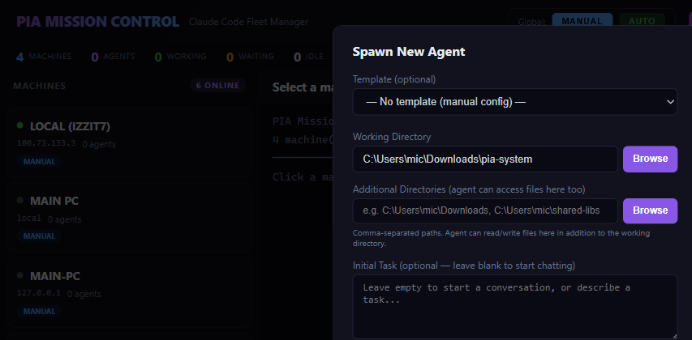

2. Spawn Modal & MCP Server Support
PASS
Spawn modal with full configuration options
The spawn modal includes Template selector, Working Directory with Browse, Additional Directories, Initial Task, Approval Mode, Model selector, Effort Level, and Max Budget.

PASS
Advanced Options: Security, Stability, MCP Servers
Advanced options expand to show: System Prompt, Max Turns, Target Machine, Blocked/Allowed Tools, Network Ecosystems (npm/pip/GitHub/Anthropic checkboxes), Stability toggles, Engine selector, and MCP Servers textarea with Playwright placeholder config.

MCP Servers field accepts JSON array:
[{"name":"playwright","transport":"stdio","command":"npx","args":["@anthropic-ai/mcp-server-playwright"]}]